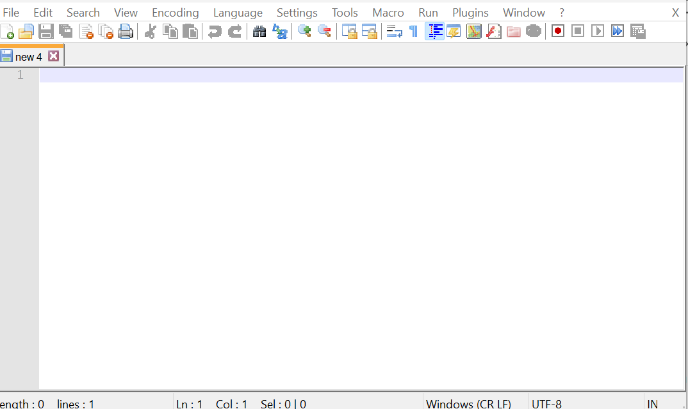

How to Install TextPad
Download Instructions
-
In TextPad, click the icon
-
Select the appropriate User Interface to start the download
-
Save the zip file and install
How to Use
-
We recommend you pin TextPad to your taskbar.
-
Click on the TextPad icon on your taskbar. TextPad should then open to a blank sheet.

Video